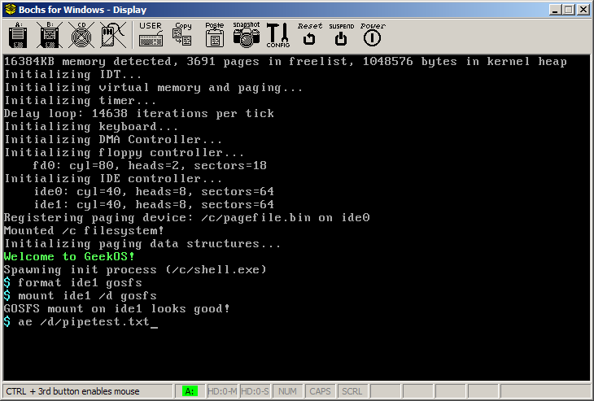
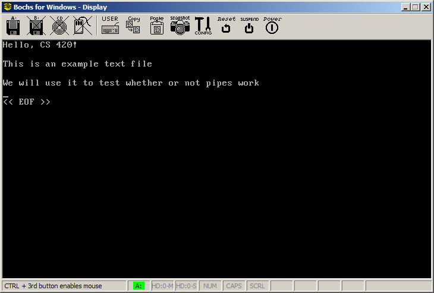
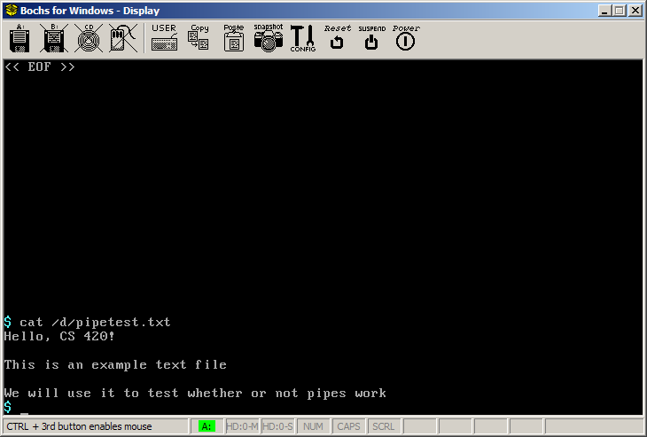
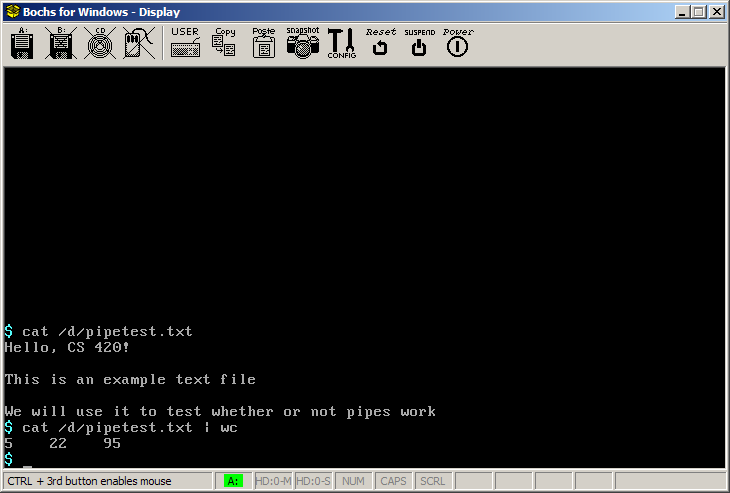

This document explains how to test to make sure that pipes are
working properly in GeekOS.
There is a bug in this file that prevents the GOSFS filesystem from
working correctly. Replace it with the following file:
One thing that you will probably need to do before proceeding is to
make sure that reading from the console device correctly translates
control-key sequences into the corresponding ASCII control
characters. Your code to read a single keypress should look
something like this.
Keycode code;
while ((code = Wait_For_Key()) & KEY_RELEASE_FLAG) {
/* key release event: discard */
}
bool isControlSequence = (code & KEY_CTRL_FLAG) != 0;
char asciiValue = (code & 0xFF);
If a pressed key has the control flag set, and if the ASCII value is
in the range 'a'..'z', then the character value you place in the
caller's buffer should be a control character. The following code
translates a control key sequence into a control character:
if (isControlSequence &&
( (asciiValue >= 'a' && asciiValue <= 'z') || (asciiValue >= 'A' && asciiValue <= 'Z') )) {
asciiValue = 1 + (TOLOWER(asciiValue) - 'a');
}
This code works because the control character control-A is ASCII
code 1, control-B is ASCII code 2, etc.
This screenshot shows the commands to use:

When you hit enter after the third command, you will be running the ae editor.
This is a very simple text editor, similar to vi. Use it to type
in a simple text document. You must start out by pressing the "i"
key to enter insert mode (just like vi!). Type a few sentences;
for example

When you are done, press the following sequence of keys:
control-L
W
Q
You should be returned to a shell prompt. You can confirm the
existence of the file as follows:

Now you can use a pipe to feed this text file to the "wc" (word
count) program:

Now you have implemented an inter-process communication
mechanism. Congratulations!